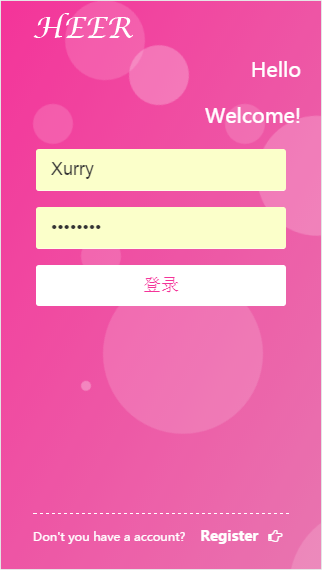

-
- Experience. 项目与工作经验
2015.9 - 2015.11
-
HEER webApp(暂未上线)
一：项目详情
1: 独立完成HEER商城 weApp的前端页面，以及相应的后端及数据库交互页面，前端页面包括：登录、注册、退出登录、修改密码、首页、分类页面、商品列表页、商品详情页、购物车页面、地址管理、提交订单(支付页面暂时未实现)以及用户中心页面；后端页面内包括：登录注册，商品的添加、删除、修改。
2: 前端使用了gulp构建工具，Sass预处理器以及React框架(考虑到性能问题前端未使用AngularJs框架)，后端使用 AngularJS框架来实现后端组件及数据交互

二：项目中遇到的问题及解决办法
1: 后端接收不到AngularJs中$http.post发送的数据的问题
问题分析及解决办法：查看请求头中的状态码，发现为状态码500，传参方式是request payload，参数格式是json，而并非用的是form传参，所以在后台用接收form数据的方式接收参数就接收不到了；所以只需配置'Content-Type':'application/x-www-form-urlencoded' 即可
2: angularJs 不能使用 JS 原生对象上的方法，因为原声JS的方法并不存在于与页面对应的 Controller的$scope中
-
希尚科技聚宝赞(已经上线)
项目详情
1: 团队协作完成聚宝赞前端页面，前端页面包括：内部登录页面、首页、产品中心、渠道加盟、招聘页面等业务页面的代码编写，初步实现了公司要求的功能。
2: 网站使用了boostrapUI框架，jquery类库，以及swiper轮播图插件
个人项目
-
基于github pages的个人博客http://xurryali.github.io/xrblog
主要用于展示个人日常心得文章
-
-
仿永辉微店项目https://github.com/XurryAli/YHMarket.git
1: 仿照永辉微店，完成了登录、注册、首页、分类页，列表页、商品详情页、购物车等页面的前端页面布局与交互。
2: 通过ajax实现页面静态数据的获取，通过cookie实现简单的密码保存用于购物车基本功能
-
NoteManagerhttps://github.com/XurryAli/NoteManager.git
1: 一个基于Markdown的笔记管理应用
-
-
- Skill. 技能清单
Web前端
-
HTML / CSS
能够编写语义化的 HTML，模块化的 CSS
熟悉 Less / Sass 等CSS预处理和后处理方法、工具
-
JavaScript
熟悉原生Javascript，能脱离jQuery等类库编码
能运用模块化、面向对象的方式编程
熟悉 RequireJS jQuery AngularJS Vue React等前端框架的使用
-
版本控制
熟悉Git分布式版本控制系统
-
其他
熟悉 Gulp Webpack 前端自动化工具
了解基本的php与MySQL数据库的数据交互
其他
-
是一个有趣的人，爱好计算机领域的技术钻研。
有一定的强迫症，无法忍受凌乱的代码以及界面像素的偏差。
学习能力强，由于大学专业是建筑学，但是对IT有着非常大的热情，所以上所有的技能都是大学利用课余时间自学习得的。
了解 Markdown 并进行写作
熟悉AutoCAD，photoshop，sketchUp，AI，ID等绘图软件